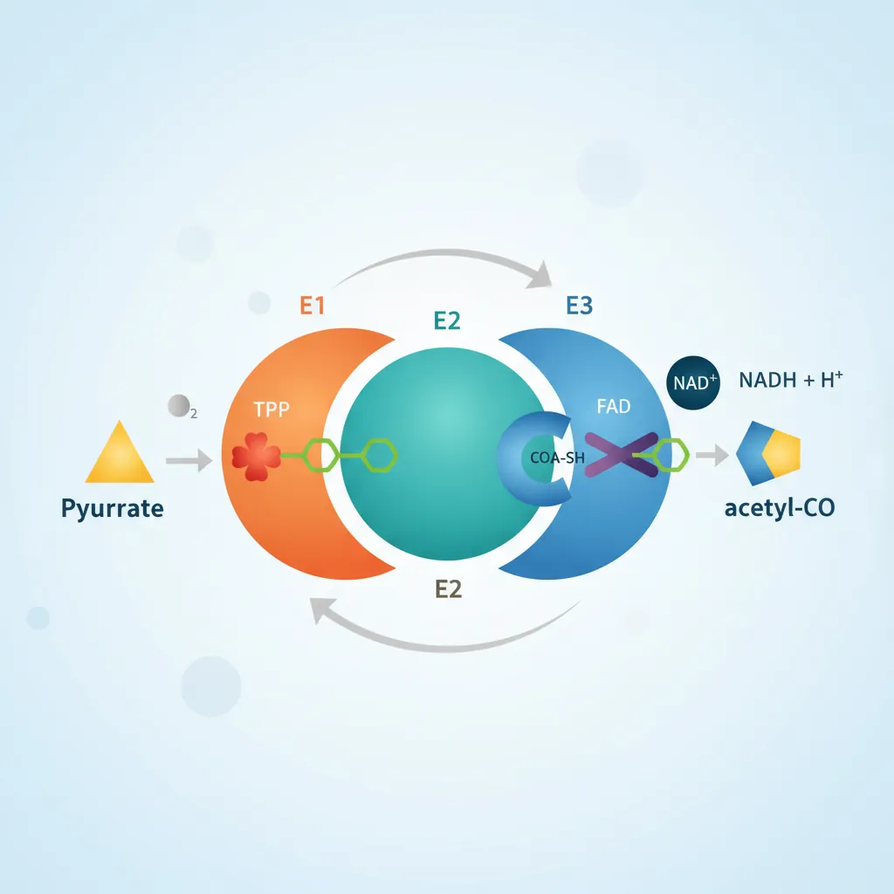
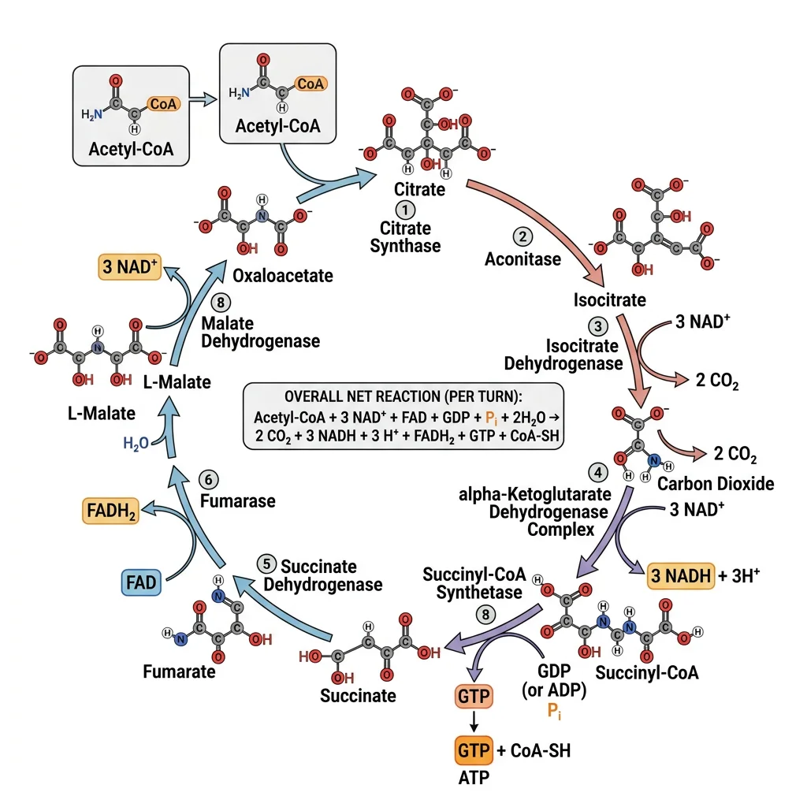
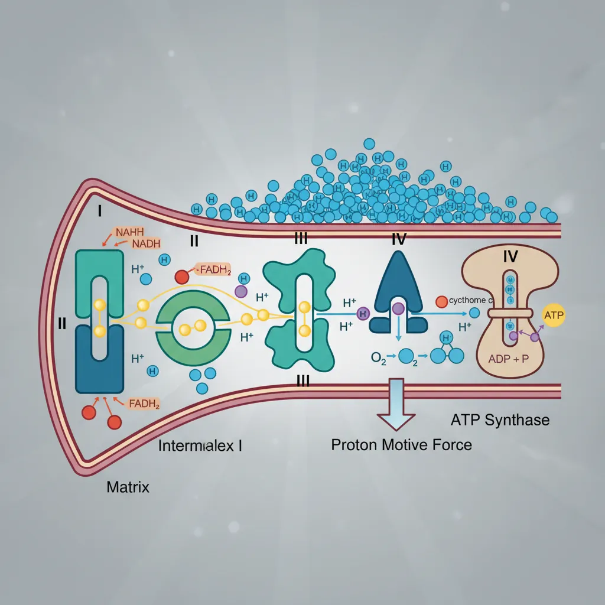
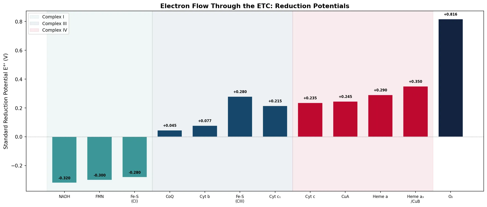
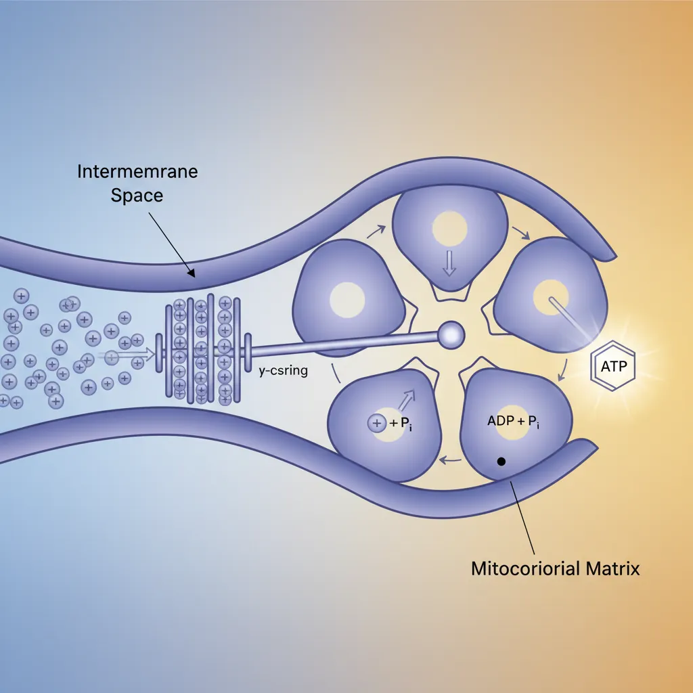
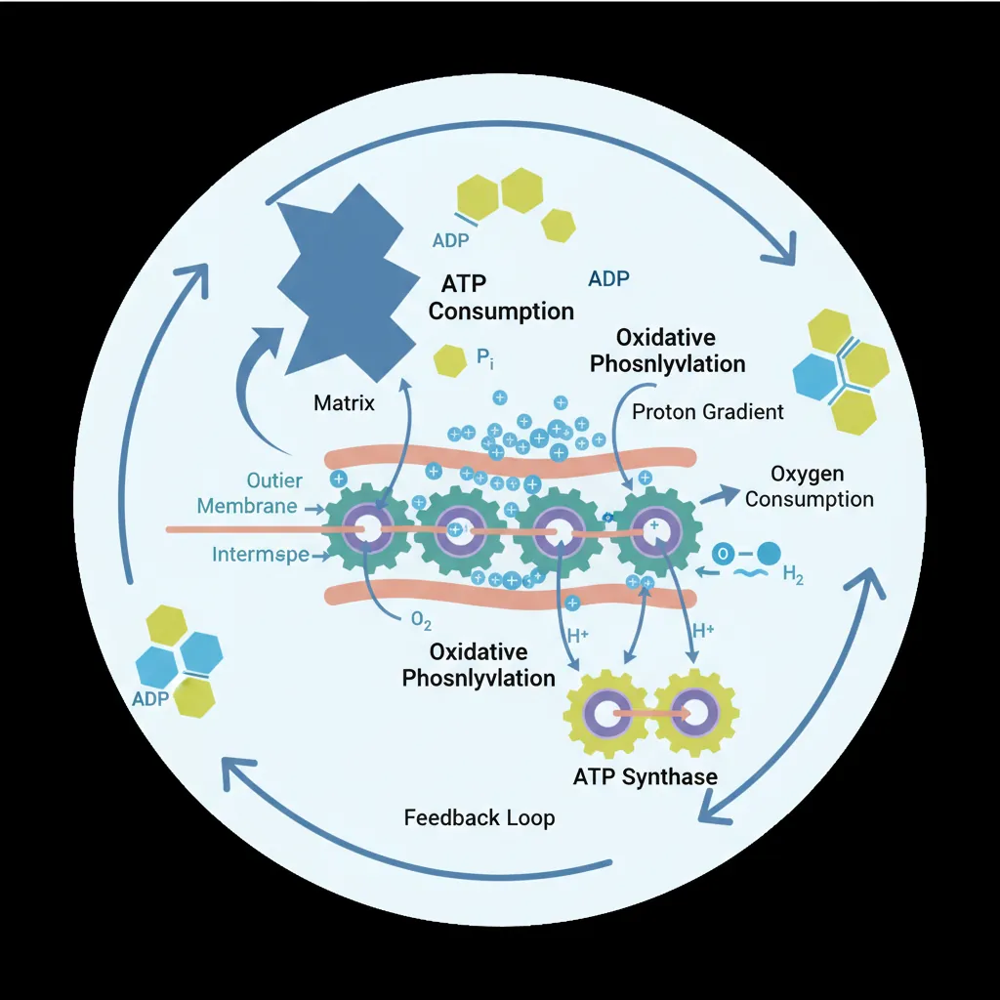
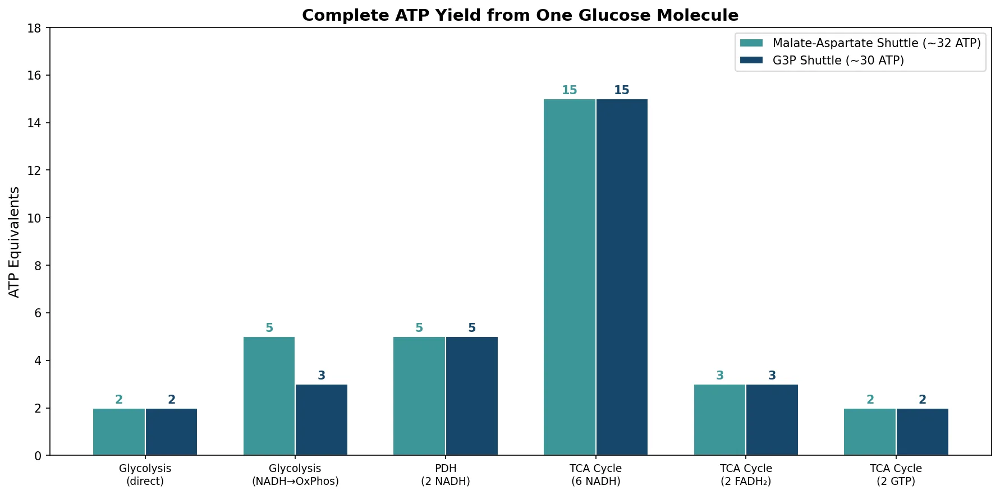
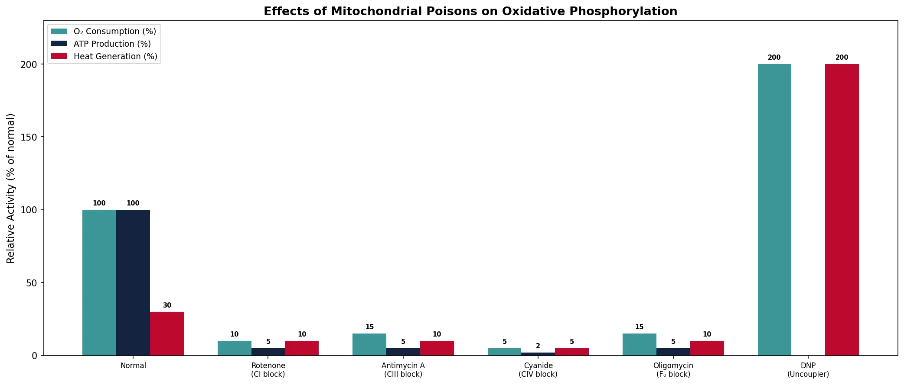

Biochemistry Mastery
Biological Chemistry Fundamentals
Atoms, bonds, functional groups, thermodynamicsWater, pH & Biological Buffers
Water polarity, pH, Henderson-Hasselbalch, blood buffersAmino Acids & Protein Structure
Amino acid classes, peptide bonds, protein foldingEnzymes & Catalysis
Kinetics, Michaelis-Menten, inhibition, regulationCarbohydrates & Lipids
Sugars, glycogen, fatty acids, cholesterol, membranesMetabolism & Bioenergetics
ATP, glycolysis, gluconeogenesis, redox carriersCitric Acid Cycle & Oxidative Phosphorylation
Acetyl-CoA, ETC, ATP synthase, oxygen dependenceSignal Transduction & Cell Communication
GPCRs, kinases, calcium, hormone cascadesNucleic Acids & Gene Expression
DNA, replication, transcription, translation, epigeneticsBrain & Nervous System Biochemistry
Neurotransmitters, ion gradients, myelin, neurodegenerationHeart & Muscle Biochemistry
Cardiac metabolism, actin-myosin, energy systemsLiver Biochemistry
Glucose homeostasis, detox, urea cycle, bileKidney Biochemistry & Acid-Base
pH regulation, ion transport, hormonal functionsEndocrine System Biochemistry
Hormone classes, signaling, glucose & stress controlDigestive System Biochemistry
Gastric acid, enzymes, bile, absorption, microbiomeImmune System Biochemistry
Antibodies, cytokines, complement, oxidative burstAdipose Tissue & Energy Balance
Triglycerides, lipolysis, leptin, obesityTissue-Specific Metabolism
Fed vs fasting, organ fuel selection, starvationMolecular Basis of Disease
Diabetes, cancer metabolism, neurodegenerationClinical Biochemistry & Diagnostics
Blood tests, liver/kidney markers, lipid panelsPyruvate Dehydrogenase Complex
Before pyruvate can enter the citric acid cycle, it must be converted to acetyl-CoA — the universal two-carbon unit that feeds the cycle. This irreversible reaction is catalyzed by the pyruvate dehydrogenase complex (PDH), a massive multi-enzyme assembly located in the mitochondrial matrix. PDH is one of the largest enzyme complexes in the cell, consisting of three enzymes and requiring five coenzymes.

The PDH Reaction
Pyruvate + CoA-SH + NAD⁺ → Acetyl-CoA + CO₂ + NADH
This single reaction accomplishes three things simultaneously: (1) oxidative decarboxylation — removal of CO₂ from pyruvate, (2) oxidation — NAD⁺ is reduced to NADH, and (3) thioester formation — the acetyl group is linked to coenzyme A via a high-energy thioester bond. The ΔG°' is −33.4 kJ/mol, making this reaction irreversible — you cannot convert acetyl-CoA back to pyruvate.
Five Coenzymes of PDH
| Coenzyme | Vitamin Precursor | Role in PDH | Enzyme Component |
|---|---|---|---|
| TPP (thiamine pyrophosphate) | Thiamine (B1) | Decarboxylation of pyruvate | E1 (pyruvate dehydrogenase) |
| Lipoamide | Lipoic acid | Transfers acetyl group to CoA | E2 (dihydrolipoyl transacetylase) |
| CoA-SH | Pantothenic acid (B5) | Accepts acetyl group (forms acetyl-CoA) | E2 |
| FAD | Riboflavin (B2) | Re-oxidizes lipoamide | E3 (dihydrolipoyl dehydrogenase) |
| NAD⁺ | Niacin (B3) | Final electron acceptor (→ NADH) | E3 |
Clinical Connection: Beriberi & Thiamine Deficiency
Thiamine (B1) deficiency impairs PDH activity (and α-ketoglutarate dehydrogenase in the TCA cycle), causing accumulation of pyruvate and lactate. This results in beriberi — affecting the cardiovascular system (wet beriberi) or nervous system (dry beriberi). In chronic alcoholics, thiamine deficiency causes Wernicke-Korsakoff syndrome, characterized by confusion, ataxia, and memory loss. Thiamine supplementation is critical before glucose administration in malnourished patients.
Acetyl-CoA Entry
Acetyl-CoA is the convergence point (or "metabolic crossroads") where fuels from all three macronutrient classes meet:
- Carbohydrates → glucose → pyruvate → acetyl-CoA (via PDH)
- Fats → fatty acids → acetyl-CoA (via β-oxidation)
- Proteins → amino acids → pyruvate, acetyl-CoA, or TCA intermediates
This convergence means that regardless of what you eat, the carbon skeletons are funneled into acetyl-CoA and then oxidized through the same citric acid cycle. Acetyl-CoA carries the acetyl group into the cycle where it is completely oxidized to 2 CO₂, with the released energy captured as NADH, FADH₂, and GTP.
PDH Regulation
PDH is regulated by both allosteric effectors and covalent modification (phosphorylation/dephosphorylation):
| Regulatory Mechanism | Activates PDH | Inhibits PDH |
|---|---|---|
| Allosteric | CoA-SH, NAD⁺, ADP, pyruvate, Ca²⁺ | Acetyl-CoA, NADH, ATP |
| Covalent (phosphorylation) | PDH phosphatase (dephosphorylates → active, stimulated by insulin, Ca²⁺) | PDH kinase (phosphorylates → inactive, stimulated by NADH, acetyl-CoA, ATP) |
The logic is elegant: when energy is abundant (high NADH, acetyl-CoA, ATP), PDH is shut off — there's no need to oxidize more fuel. When energy is depleted (high NAD⁺, CoA-SH, ADP), PDH is activated to generate more acetyl-CoA for the TCA cycle.
Citric Acid Cycle
The citric acid cycle (also called the tricarboxylic acid cycle or Krebs cycle) is the central metabolic hub of the cell. Located in the mitochondrial matrix, this cyclic pathway oxidizes the two-carbon acetyl group of acetyl-CoA to 2 CO₂, capturing the released energy as 3 NADH, 1 FADH₂, and 1 GTP per turn. The cycle doesn't directly produce much ATP — its primary role is to harvest high-energy electrons carried by NADH and FADH₂ for delivery to the electron transport chain.

Hans Krebs & the Citric Acid Cycle
Hans Krebs proposed the cyclic nature of the pathway in 1937 while working at the University of Sheffield. By studying pigeon breast muscle (rich in mitochondria), he observed that citrate, α-ketoglutarate, succinate, fumarate, and oxaloacetate all had catalytic effects on respiration — each one stimulated O₂ consumption far beyond what its own oxidation could account for. This indicated a cyclic process where intermediates were regenerated. His paper was famously rejected by Nature and published in Enzymologia instead. Krebs received the Nobel Prize in Physiology or Medicine in 1953.
The Eight Reactions
The cycle consists of eight enzyme-catalyzed reactions that progressively oxidize the two carbons entering as the acetyl group, releasing them as CO₂:
| # | Enzyme | Reaction | Product(s) / Notes | Type |
|---|---|---|---|---|
| 1 | Citrate synthase | Acetyl-CoA + OAA → Citrate + CoA-SH | Condensation; commits acetyl group to cycle | Condensation |
| 2 | Aconitase | Citrate → Isocitrate | Via cis-aconitate intermediate; Fe-S cluster | Isomerization |
| 3 | Isocitrate dehydrogenase | Isocitrate → α-Ketoglutarate + CO₂ | NADH produced; 1st CO₂ released | Oxidative decarboxylation |
| 4 | α-Ketoglutarate dehydrogenase | α-KG + CoA → Succinyl-CoA + CO₂ | NADH produced; 2nd CO₂ released; similar to PDH | Oxidative decarboxylation |
| 5 | Succinyl-CoA synthetase | Succinyl-CoA → Succinate + CoA-SH | GTP produced (substrate-level phosphorylation) | Substrate-level phosphorylation |
| 6 | Succinate dehydrogenase | Succinate → Fumarate | FADH₂ produced; embedded in inner membrane (Complex II) | Oxidation |
| 7 | Fumarase | Fumarate → Malate | Hydration (addition of H₂O) | Hydration |
| 8 | Malate dehydrogenase | Malate → Oxaloacetate | NADH produced; cycle restarts | Oxidation |
Per-Turn Energy Yield
Each turn of the citric acid cycle produces: 3 NADH (steps 3, 4, 8) + 1 FADH₂ (step 6) + 1 GTP (step 5) + 2 CO₂ (steps 3, 4). Since each glucose yields 2 acetyl-CoA, multiply by 2 for the total from one glucose molecule: 6 NADH + 2 FADH₂ + 2 GTP + 4 CO₂ from the TCA cycle alone.
TCA Cycle Regulation
The cycle is regulated at three key enzymes — the same three that catalyze the irreversible, highly exergonic reactions:
| Regulatory Enzyme | Activators | Inhibitors | Logic |
|---|---|---|---|
| Citrate synthase (step 1) | OAA, acetyl-CoA substrate availability | ATP, NADH, succinyl-CoA, citrate | High energy → slow entry into cycle |
| Isocitrate dehydrogenase (step 3) | ADP, Ca²⁺ | ATP, NADH | Low energy (ADP) → speed up oxidation |
| α-Ketoglutarate dehydrogenase (step 4) | Ca²⁺, ADP | NADH, succinyl-CoA, ATP | Product inhibition; energy sensing |
Notice the common theme: NADH and ATP inhibit (energy is sufficient), while ADP and Ca²⁺ activate (energy is needed, especially during muscle contraction when Ca²⁺ is released).
Anaplerotic Reactions
Anaplerosis (from Greek: "filling up") refers to reactions that replenish TCA cycle intermediates when they are withdrawn for biosynthesis. Without anaplerotic reactions, the cycle would stall because intermediates diverted to biosynthesis wouldn't be replaced.
Why Anaplerosis Matters
TCA cycle intermediates serve dual roles — they are both cycle participants and biosynthetic precursors. For example, oxaloacetate is drawn off for gluconeogenesis, α-ketoglutarate for amino acid synthesis, and succinyl-CoA for heme synthesis. If these intermediates aren't replaced, the cycle grinds to a halt. The most important anaplerotic reaction is: Pyruvate + CO₂ + ATP → Oxaloacetate (catalyzed by pyruvate carboxylase, activated by acetyl-CoA).
| Anaplerotic Reaction | Enzyme | Product | Tissue |
|---|---|---|---|
| Pyruvate + CO₂ → OAA | Pyruvate carboxylase | Oxaloacetate | Liver, kidney (most important) |
| Glutamate → α-Ketoglutarate | Glutamate dehydrogenase | α-Ketoglutarate | Liver, brain |
| Amino acids → various intermediates | Transaminases | OAA, α-KG, fumarate, succinyl-CoA | All tissues |
| Odd-chain fatty acids → succinyl-CoA | Propionyl-CoA carboxylase | Succinyl-CoA | Liver |
Why "Fat Burns in the Flame of Carbohydrate"
This classic biochemistry saying reflects the fact that oxaloacetate (OAA) is needed to condense with acetyl-CoA (step 1 of the cycle). During starvation or uncontrolled diabetes, OAA is depleted because it's diverted to gluconeogenesis. With insufficient OAA, acetyl-CoA from fatty acid oxidation cannot enter the TCA cycle efficiently. Instead, excess acetyl-CoA is converted to ketone bodies (acetoacetate, β-hydroxybutyrate, acetone) — leading to ketoacidosis in severe cases.
Electron Transport Chain
The electron transport chain (ETC) is the final stage of aerobic respiration, embedded in the inner mitochondrial membrane. It accepts electrons from NADH and FADH₂ (produced by glycolysis, PDH, and the TCA cycle) and passes them through a series of protein complexes in a controlled "downhill" flow toward molecular oxygen. The energy released during electron transfer is used to pump protons (H⁺) from the matrix to the intermembrane space, creating an electrochemical gradient that drives ATP synthesis.

The Big Picture Analogy
Think of the ETC as a hydroelectric dam. Electrons from NADH and FADH₂ flow "downhill" through the complexes (like water flowing down a dam). This energy is used to pump protons "uphill" into the intermembrane space (like pumping water into a reservoir). When protons flow back down through ATP synthase, their potential energy drives the turbine — generating ATP. Oxygen sits at the bottom, accepting the spent electrons.
Complexes I and II: Electron Entry Points
Electrons enter the chain at two points depending on their carrier:
Complex I: NADH-Ubiquinone Oxidoreductase
Complex I is the largest complex in the ETC (45 subunits in mammals, ~1,000 kDa). It accepts electrons from NADH, passes them through a flavin mononucleotide (FMN) prosthetic group and a series of iron-sulfur (Fe-S) clusters, and delivers them to ubiquinone (Coenzyme Q). The energy released pumps 4 H⁺ across the membrane per NADH oxidized.
| Complex | Name | Electron Donor | Electron Acceptor | H⁺ Pumped | Key Prosthetic Groups |
|---|---|---|---|---|---|
| I | NADH-UQ oxidoreductase | NADH | Ubiquinone (CoQ) | 4 H⁺ | FMN, Fe-S clusters |
| II | Succinate dehydrogenase | FADH₂ (from succinate) | Ubiquinone (CoQ) | 0 H⁺ | FAD, Fe-S clusters |
Complex II: Succinate-Ubiquinone Oxidoreductase
Complex II is unique — it is the same enzyme as succinate dehydrogenase (step 6 of the TCA cycle). It oxidizes succinate to fumarate, producing FADH₂ that directly transfers electrons to ubiquinone. Critically, Complex II does not pump protons. This is why FADH₂ yields fewer ATP than NADH — electrons from FADH₂ bypass the proton-pumping Complex I entirely.
Mobile Electron Carriers
Two mobile carriers shuttle electrons between the fixed complexes: (1) Ubiquinone (Coenzyme Q) — a lipid-soluble molecule that diffuses freely within the inner membrane, collecting electrons from Complexes I and II and delivering them to Complex III. (2) Cytochrome c — a small water-soluble protein loosely attached to the outer surface of the inner membrane, shuttling electrons from Complex III to Complex IV.
Complexes III and IV: Completing the Chain
Complex III: Ubiquinol-Cytochrome c Oxidoreductase
Complex III accepts electrons from reduced ubiquinol (QH₂) and transfers them to cytochrome c through the intricate Q cycle. This process pumps 4 H⁺ per pair of electrons. The Q cycle effectively doubles the proton-pumping efficiency by oxidizing ubiquinol in two steps, recycling the ubisemiquinone intermediate.
Complex IV: Cytochrome c Oxidase
Complex IV catalyzes the final step — transferring electrons from cytochrome c to molecular oxygen (O₂), reducing it to water (H₂O). This complex contains copper centers (CuA, CuB) and heme groups (heme a, heme a₃). It pumps 2 H⁺ per pair of electrons and consumes an additional 2 H⁺ from the matrix to form water.
| Complex | Name | Electron Donor | Electron Acceptor | H⁺ Pumped | Key Features |
|---|---|---|---|---|---|
| III | Cytochrome bc₁ complex | Ubiquinol (QH₂) | Cytochrome c | 4 H⁺ | Q cycle mechanism; Fe-S, heme bL, bH, c₁ |
| IV | Cytochrome c oxidase | Cytochrome c | O₂ → H₂O | 2 H⁺ | Final O₂ reduction; CuA, CuB, heme a, a₃ |
Total Proton Pumping Summary
Per NADH: Complex I (4 H⁺) + Complex III (4 H⁺) + Complex IV (2 H⁺) = 10 H⁺ pumped
Per FADH₂: Complex III (4 H⁺) + Complex IV (2 H⁺) = 6 H⁺ pumped (bypasses Complex I)
This is why NADH yields ~2.5 ATP while FADH₂ yields ~1.5 ATP — FADH₂ enters at a lower energy level and pumps fewer protons.
import numpy as np
import matplotlib.pyplot as plt
# Standard reduction potentials for ETC components
components = ['NADH', 'FMN', 'Fe-S\n(CI)', 'CoQ', 'Cyt b', 'Fe-S\n(CIII)', 'Cyt c₁', 'Cyt c', 'CuA', 'Heme a', 'Heme a₃\n/CuB', 'O₂']
potentials = [-0.320, -0.300, -0.280, 0.045, 0.077, 0.280, 0.215, 0.235, 0.245, 0.290, 0.350, 0.816]
colors = ['#3B9797','#3B9797','#3B9797','#16476A','#16476A','#16476A','#16476A','#BF092F','#BF092F','#BF092F','#BF092F','#132440']
fig, ax = plt.subplots(figsize=(14, 6))
bars = ax.bar(range(len(components)), potentials, color=colors, edgecolor='white', linewidth=0.8, width=0.7)
# Add complex labels
ax.axvspan(-0.5, 2.5, alpha=0.08, color='#3B9797', label='Complex I')
ax.axvspan(2.5, 6.5, alpha=0.08, color='#16476A', label='Complex III')
ax.axvspan(6.5, 10.5, alpha=0.08, color='#BF092F', label='Complex IV')
ax.axhline(y=0, color='gray', linestyle='--', linewidth=0.5)
ax.set_xticks(range(len(components)))
ax.set_xticklabels(components, fontsize=8, ha='center')
ax.set_ylabel("Standard Reduction Potential E°' (V)", fontsize=11)
ax.set_title("Electron Flow Through the ETC: Reduction Potentials", fontsize=13, fontweight='bold')
ax.legend(loc='upper left', fontsize=9)
for bar, val in zip(bars, potentials):
ax.text(bar.get_x() + bar.get_width()/2, bar.get_height() + 0.02, f'{val:+.3f}',
ha='center', va='bottom', fontsize=7, fontweight='bold')
plt.tight_layout()
plt.savefig('etc_reduction_potentials.png', dpi=150, bbox_inches='tight')
plt.show()
print("Electrons flow from low E°' (NADH, -0.320V) to high E°' (O₂, +0.816V)")
print(f"Total ΔE°' = {0.816 - (-0.320):.3f} V")
print(f"ΔG°' = -nFΔE°' = -2 × 96,485 × 1.136 = {-2 * 96485 * 1.136 / 1000:.1f} kJ/mol")

Chemiosmotic Theory & ATP Synthase
The link between electron transport and ATP synthesis was one of the most controversial questions in 20th-century biology. How does the energy from electron flow become the energy of ATP? The answer, proposed by Peter Mitchell, was radical: it's not a direct chemical coupling — it's an electrochemical proton gradient across the inner mitochondrial membrane.

Peter Mitchell & the Chemiosmotic Hypothesis
In 1961, Peter Mitchell proposed that electron transport and ATP synthesis are coupled by a proton motive force (PMF) — an electrochemical gradient of H⁺ ions across the inner mitochondrial membrane. This idea was initially met with skepticism and even hostility from the biochemistry establishment, who expected a conventional chemical intermediate. Mitchell's hypothesis required: (1) an intact membrane (impermeable to H⁺), (2) proton pumps driven by electron transport, and (3) a proton-driven ATP synthase. Over 15 years of vigorous debate and experimental testing eventually vindicated Mitchell, earning him the Nobel Prize in Chemistry in 1978.
Proton Motive Force (PMF)
The proton motive force has two components:
PMF Equation
Δp = ΔΨ − (2.303 RT/F) × ΔpH
Where: ΔΨ = membrane potential (electrical component, ~140 mV; positive outside matrix), ΔpH = pH gradient (chemical component, ~1.4 pH units; matrix is more alkaline). At 37°C, the total PMF ≈ 200 mV (≈ −20 kJ/mol per H⁺). Both components drive H⁺ back into the matrix through ATP synthase.
ATP Synthase: The Molecular Turbine
ATP synthase (Complex V) is one of the most remarkable molecular machines in nature — a rotary motor that converts the proton motive force into the mechanical energy of rotation, which in turn drives the synthesis of ATP from ADP + Pi.
| Component | Subunits | Location | Function |
|---|---|---|---|
| F₀ (rotor) | a, b, c-ring (8-15 c subunits) | Embedded in inner membrane | Proton channel; c-ring rotates as H⁺ flows through |
| γ-shaft | γ, ε subunits | Central stalk connecting F₀ to F₁ | Rotates within α₃β₃ hexamer, driving conformational changes |
| F₁ (catalytic head) | α₃β₃ hexamer | Protrudes into matrix | Contains 3 catalytic sites (on β subunits); synthesizes ATP |
| Peripheral stalk | a, b, δ, OSCP | Side of complex | Stator — prevents α₃β₃ from co-rotating with γ |
Boyer & Walker: The Binding Change Mechanism
Paul Boyer proposed the binding change mechanism — the three β subunits cycle through three conformational states as the γ-shaft rotates 120° at a time: (1) O (Open) — binds ADP + Pi loosely, (2) L (Loose) — closes around substrates, (3) T (Tight) — catalyzes ATP formation (the reaction at the active site is nearly at equilibrium — the energy input is for releasing ATP, not for making it). John Walker solved the crystal structure of F₁ in 1994, confirming this asymmetric mechanism. Each 360° rotation of γ produces 3 ATP. They shared the Nobel Prize in Chemistry in 1997.
The P/O Ratio and ATP Yield
The P/O ratio expresses the number of ATP molecules synthesized per atom of oxygen consumed (per pair of electrons reaching O₂). Current consensus values are:
| Electron Donor | H⁺ Pumped (per 2e⁻) | H⁺ per ATP (~4 H⁺) | P/O Ratio | ATP Yield |
|---|---|---|---|---|
| NADH | 10 H⁺ | 10 / 4 = 2.5 | ~2.5 | ~2.5 ATP per NADH |
| FADH₂ | 6 H⁺ | 6 / 4 = 1.5 | ~1.5 | ~1.5 ATP per FADH₂ |
Why ~4 H⁺ per ATP?
ATP synthase requires approximately 3 H⁺ flowing through the c-ring per ATP synthesized (if c₁₀ ring, then 10/3 ≈ 3.3 H⁺), plus 1 H⁺ for the adenine nucleotide translocase (ANT) that imports ADP and exports ATP across the inner membrane. Total: approximately 4 H⁺ per ATP. This number can vary depending on the number of c-subunits in the c-ring, which differs between species.
Regulation & Oxygen Dependence
Oxidative phosphorylation is tightly regulated to match cellular energy demand. The rate of oxygen consumption (and thus ATP production) is not constant — it accelerates when ATP is consumed and slows when energy is abundant. This concept, known as respiratory control, ensures metabolic efficiency and prevents wasteful dissipation of the proton gradient.

Respiratory Control
The primary regulator of the ETC is the availability of ADP. When a cell is actively using ATP (e.g., during muscle contraction), ADP levels rise. ADP stimulates ATP synthase, which drains the proton gradient, which in turn allows the ETC to pump protons faster, consuming O₂ more rapidly. This is a beautifully simple feedback loop:
Respiratory Control Ratio (RCR)
RCR = State 3 Rate / State 4 Rate
State 3 (active respiration): High ADP, rapid O₂ consumption, maximal ATP production.
State 4 (resting respiration): Low ADP, slow O₂ consumption, minimal ATP production.
Healthy mitochondria have an RCR of 5-10 or higher, indicating tight coupling. A low RCR suggests membrane damage (proton leak) or uncoupling. This ratio is a critical measure of mitochondrial health in research and clinical diagnostics.
| Condition | ADP Level | O₂ Consumption | ATP Production | PMF |
|---|---|---|---|---|
| State 3 (active) | High | Fast | Maximal | Partially dissipated by ATP synthase |
| State 4 (resting) | Low | Slow | Minimal | High (limits further electron transport) |
| Uncoupled | Any | Very fast | None | Dissipated as heat |
Oxygen as Terminal Electron Acceptor
Oxygen is the terminal electron acceptor of the ETC — it sits at the end of the chain with the highest reduction potential (E°' = +0.816 V), providing the thermodynamic "pull" that drives electrons through the entire chain. Without O₂, electrons have nowhere to go, the ETC stalls, NADH and FADH₂ cannot be reoxidized, and the TCA cycle stops (because it requires NAD⁺ and FAD).
Why Oxygen Deprivation Is Lethal
When O₂ is absent (anoxia), the entire aerobic pathway shuts down: (1) ETC stops → (2) NADH accumulates, NAD⁺ depletes → (3) TCA cycle stops (no NAD⁺ for steps 3, 4, 8) → (4) PDH stops → (5) Only anaerobic glycolysis continues (2 ATP per glucose vs ~30-32 with O₂). Tissues with high metabolic demand (brain, heart) are extremely vulnerable — brain cells begin dying within 4-6 minutes of oxygen deprivation. This is why cardiac arrest and stroke are medical emergencies.
Complete ATP Yield from Glucose Oxidation
| Stage | Location | NADH | FADH₂ | GTP/ATP (direct) | ATP (via OxPhos) |
|---|---|---|---|---|---|
| Glycolysis | Cytoplasm | 2 NADH | — | 2 ATP | 3-5 ATP* |
| Pyruvate → Acetyl-CoA | Matrix | 2 NADH | — | — | 5 ATP |
| TCA Cycle (×2) | Matrix | 6 NADH | 2 FADH₂ | 2 GTP | 18 ATP |
| Total | — | 10 NADH | 2 FADH₂ | 4 ATP/GTP | ~30-32 ATP |
*Cytoplasmic NADH must be shuttled into mitochondria via the malate-aspartate shuttle (yields 2.5 ATP/NADH, used in heart/liver) or the glycerol-3-phosphate shuttle (yields 1.5 ATP/NADH, used in muscle/brain), accounting for the 30-32 range.
import numpy as np
import matplotlib.pyplot as plt
# Complete ATP accounting from glucose oxidation
stages = ['Glycolysis\n(direct)', 'Glycolysis\n(NADH→OxPhos)', 'PDH\n(2 NADH)',
'TCA Cycle\n(6 NADH)', 'TCA Cycle\n(2 FADH₂)', 'TCA Cycle\n(2 GTP)']
# Using malate-aspartate shuttle for glycolytic NADH
atp_high = [2, 5, 5, 15, 3, 2] # ~32 total
# Using glycerol-3-phosphate shuttle
atp_low = [2, 3, 5, 15, 3, 2] # ~30 total
x = np.arange(len(stages))
width = 0.35
fig, ax = plt.subplots(figsize=(12, 6))
bars1 = ax.bar(x - width/2, atp_high, width, label='Malate-Aspartate Shuttle (~32 ATP)',
color='#3B9797', edgecolor='white')
bars2 = ax.bar(x + width/2, atp_low, width, label='G3P Shuttle (~30 ATP)',
color='#16476A', edgecolor='white')
for bar in bars1:
ax.text(bar.get_x() + bar.get_width()/2, bar.get_height() + 0.2,
f'{bar.get_height():.0f}', ha='center', fontsize=10, fontweight='bold', color='#3B9797')
for bar in bars2:
ax.text(bar.get_x() + bar.get_width()/2, bar.get_height() + 0.2,
f'{bar.get_height():.0f}', ha='center', fontsize=10, fontweight='bold', color='#16476A')
ax.set_ylabel('ATP Equivalents', fontsize=12)
ax.set_title('Complete ATP Yield from One Glucose Molecule', fontsize=14, fontweight='bold')
ax.set_xticks(x)
ax.set_xticklabels(stages, fontsize=9)
ax.legend(fontsize=10)
ax.set_ylim(0, 18)
plt.tight_layout()
plt.savefig('glucose_atp_yield.png', dpi=150, bbox_inches='tight')
plt.show()
print(f"Total ATP (malate-aspartate shuttle): {sum(atp_high)} ATP per glucose")
print(f"Total ATP (G3P shuttle): {sum(atp_low)} ATP per glucose")
print(f"Efficiency: {sum(atp_high)*30.5/2870*100:.1f}% of glucose bond energy captured as ATP")

Metabolic Poisons & Inhibitors
Understanding how metabolic poisons work provides both mechanistic insight into mitochondrial function and crucial knowledge for toxicology and pharmacology. ETC inhibitors, uncouplers, and ATP synthase inhibitors each disrupt oxidative phosphorylation through different mechanisms — and their effects reveal how finely tuned this system is.
ETC Complex Inhibitors
These compounds block electron flow at specific complexes, halting the entire chain downstream of the block:
| Inhibitor | Target | Mechanism | Effect | Source / Use |
|---|---|---|---|---|
| Rotenone | Complex I | Blocks NADH → CoQ electron transfer | NADH accumulates, ATP drops | Plant-derived pesticide; fish poison |
| Barbiturates (amobarbital) | Complex I | Same as rotenone | Respiratory depression | Sedatives (overdose risk) |
| Antimycin A | Complex III | Blocks electron flow through Q cycle | QH₂ accumulates, ROS increase | Antibiotic from Streptomyces |
| Cyanide (CN⁻) | Complex IV | Binds Fe³⁺ in cytochrome a₃, blocks O₂ binding | Complete ETC shutdown → death | Industrial poison; bitter almonds |
| Carbon monoxide (CO) | Complex IV | Binds Fe²⁺ in cytochrome a₃ (and hemoglobin) | O₂ delivery and utilization blocked | Combustion byproduct |
| Hydrogen sulfide (H₂S) | Complex IV | Similar to cyanide | Inhibits cytochrome oxidase | Sewer gas; volcanic emissions |
Cyanide Poisoning & Antidotes
Cyanide kills rapidly by blocking Complex IV — cells cannot use O₂ even though blood is fully oxygenated (venous blood appears bright red). Treatment involves: (1) Amyl nitrite / sodium nitrite — oxidizes hemoglobin to methemoglobin, which binds CN⁻ preferentially, pulling it off Complex IV, (2) Sodium thiosulfate — provides sulfur for rhodanese enzyme to convert CN⁻ to non-toxic thiocyanate (SCN⁻), (3) Hydroxocobalamin (vitamin B12a) — binds CN⁻ directly to form cyanocobalamin (vitamin B12), which is excreted renally.
ATP Synthase Inhibitor
Oligomycin
Oligomycin blocks the proton channel of the F₀ subunit of ATP synthase, preventing H⁺ flow through the enzyme. Result: ATP synthesis stops. But because the proton gradient cannot be dissipated, it builds up to a maximum, which in turn stops the ETC (the complexes cannot pump against a saturated gradient). So oligomycin inhibits both ATP synthesis and electron transport. O₂ consumption drops dramatically — not because the ETC is directly poisoned, but because it is "backed up" by the unrelievable gradient.
Uncouplers
Uncouplers are fundamentally different from inhibitors — they dissipate the proton gradient without going through ATP synthase, allowing electron transport to run at maximum speed while no ATP is produced. The energy is released as heat.
| Uncoupler | Type | Mechanism | Significance |
|---|---|---|---|
| 2,4-DNP (dinitrophenol) | Chemical | Lipid-soluble weak acid; carries H⁺ across inner membrane | Formerly used as weight-loss drug; caused fatal hyperthermia |
| FCCP / CCCP | Chemical | Potent protonophores; lab reagents | Used to measure maximal respiratory capacity |
| Thermogenin (UCP1) | Biological | Protein channel in brown fat mitochondria; dissipates PMF as heat | Non-shivering thermogenesis in newborns and hibernating animals |
| Aspirin (high dose) | Chemical | Salicylate uncouples oxidative phosphorylation at high doses | Explains hyperthermia and metabolic acidosis in aspirin overdose |
Brown Adipose Tissue & Non-Shivering Thermogenesis
Brown adipose tissue (BAT) is specialized for heat generation. Its mitochondria contain UCP1 (thermogenin), a protein that allows protons to leak back into the matrix without passing through ATP synthase. The energy of the proton gradient is released as heat instead of ATP. This is critical for newborn infants (who cannot shiver effectively) and for hibernating mammals. BAT is densely packed with mitochondria (hence the brown color from cytochrome iron), highly vascularized, and activated by norepinephrine via β₃-adrenergic receptors. Adults retain some BAT in supraclavicular and paravertebral regions — and activating it is a target of anti-obesity research.
Reactive Oxygen Species (ROS)
A clinically important consequence of ETC inhibition is the generation of reactive oxygen species (ROS). When electron flow is blocked (especially at Complexes I and III), electrons can "leak" from ubisemiquinone and reduce O₂ to superoxide (O₂⁻) instead of water. Superoxide is further converted to H₂O₂ (hydrogen peroxide) by superoxide dismutase, and to the highly destructive hydroxyl radical (•OH) via the Fenton reaction. ROS damage lipids, proteins, and DNA — contributing to aging, neurodegeneration (Parkinson's disease), and ischemia-reperfusion injury.
import numpy as np
import matplotlib.pyplot as plt
# Compare effects of inhibitors vs uncouplers vs oligomycin
conditions = ['Normal', 'Rotenone\n(CI block)', 'Antimycin A\n(CIII block)',
'Cyanide\n(CIV block)', 'Oligomycin\n(F₀ block)', 'DNP\n(Uncoupler)']
o2_consumption = [100, 10, 15, 5, 15, 200]
atp_production = [100, 5, 5, 2, 5, 0]
heat_generation = [30, 10, 10, 5, 10, 200]
x = np.arange(len(conditions))
width = 0.25
fig, ax = plt.subplots(figsize=(14, 6))
bars1 = ax.bar(x - width, o2_consumption, width, label='O₂ Consumption (%)', color='#3B9797')
bars2 = ax.bar(x, atp_production, width, label='ATP Production (%)', color='#132440')
bars3 = ax.bar(x + width, heat_generation, width, label='Heat Generation (%)', color='#BF092F')
ax.set_ylabel('Relative Activity (% of normal)', fontsize=11)
ax.set_title('Effects of Mitochondrial Poisons on Oxidative Phosphorylation', fontsize=13, fontweight='bold')
ax.set_xticks(x)
ax.set_xticklabels(conditions, fontsize=8)
ax.legend(fontsize=9)
ax.set_ylim(0, 230)
for bars in [bars1, bars2, bars3]:
for bar in bars:
if bar.get_height() > 0:
ax.text(bar.get_x() + bar.get_width()/2, bar.get_height() + 3,
f'{bar.get_height():.0f}', ha='center', fontsize=7, fontweight='bold')
plt.tight_layout()
plt.savefig('mitochondrial_poisons_effects.png', dpi=150, bbox_inches='tight')
plt.show()
print("Key insight: Inhibitors reduce BOTH O₂ and ATP; uncouplers increase O₂ but eliminate ATP")
print("Oligomycin blocks ATP synthase but also slows ETC (gradient cannot be relieved)")

Practice Exercises
Exercise 1: PDH Coenzyme Challenge
A patient with chronic alcoholism and malnutrition shows elevated blood pyruvate and lactate. Which vitamin deficiency most likely causes PDH impairment? Name all five coenzymes required by the PDH complex and their vitamin precursors.
View Answer
Thiamine (B1) deficiency is most likely. The five coenzymes are: (1) TPP from thiamine (B1), (2) lipoamide from lipoic acid, (3) CoA-SH from pantothenic acid (B5), (4) FAD from riboflavin (B2), (5) NAD⁺ from niacin (B3). TPP is required for E1 (decarboxylation step), and B1 deficiency directly blocks pyruvate → acetyl-CoA conversion, causing pyruvate and lactate accumulation (Wernicke-Korsakoff syndrome).
Exercise 2: TCA Cycle Energy Accounting
Calculate the total number of ATP equivalents produced from one molecule of acetyl-CoA entering the TCA cycle, given: NADH → 2.5 ATP, FADH₂ → 1.5 ATP, GTP → 1 ATP. Then calculate for one complete glucose molecule (including glycolysis and PDH).
View Answer
Per acetyl-CoA (one TCA turn): 3 NADH × 2.5 = 7.5 ATP + 1 FADH₂ × 1.5 = 1.5 ATP + 1 GTP = 1 ATP = 10 ATP equivalents.
Per glucose (full oxidation): Glycolysis: 2 ATP + 2 NADH (5 ATP via malate-aspartate shuttle) = 7 ATP. PDH: 2 NADH × 2.5 = 5 ATP. TCA: 2 × 10 = 20 ATP. Total: 7 + 5 + 20 = 32 ATP.
Exercise 3: Cyanide vs DNP
Compare the effects of cyanide and 2,4-DNP on: (a) oxygen consumption, (b) ATP production, (c) the proton gradient. A patient presents with cherry-red skin and normal PaO₂ — which poison is more likely?
View Answer
Cyanide: (a) O₂ consumption stops (Complex IV blocked), (b) ATP production stops, (c) gradient maintained but useless (ETC frozen). DNP: (a) O₂ consumption increases dramatically, (b) ATP production drops to zero, (c) gradient dissipated as heat. Cherry-red skin with normal PaO₂ = cyanide poisoning — cells can't use O₂, so venous blood remains fully oxygenated (bright red).
Exercise 4: Anaplerosis Scenario
During gluconeogenesis, oxaloacetate is depleted from the TCA cycle. If acetyl-CoA from fatty acid β-oxidation is abundant but OAA is scarce, what metabolic consequence occurs? Which enzyme replenishes OAA and what activates it?
View Answer
With insufficient OAA, acetyl-CoA cannot condense with OAA (citrate synthase, step 1). The excess acetyl-CoA is diverted to ketone body synthesis (ketogenesis) — producing acetoacetate, β-hydroxybutyrate, and acetone. This leads to ketoacidosis in uncontrolled diabetes or starvation. Pyruvate carboxylase replenishes OAA (Pyruvate + CO₂ + ATP → OAA), and it is allosterically activated by acetyl-CoA itself — a logical feedback: excess acetyl-CoA signals the need for more OAA.
Exercise 5: Brown Fat Thermogenesis
Explain why UCP1 (thermogenin) in brown adipose tissue allows heat generation without ATP production. How is this physiologically useful, and how is it regulated? Why does this not occur in white adipose tissue?
View Answer
UCP1 creates a proton leak pathway across the inner mitochondrial membrane, bypassing ATP synthase. Protons flow down their gradient through UCP1 instead of Complex V, dissipating the PMF energy as heat. ETC runs unrestrained (O₂ consumption maximal), but no ATP is made. This is essential for non-shivering thermogenesis in newborns and hibernating mammals. It's regulated by norepinephrine → β₃-adrenergic receptor → cAMP → PKA → lipolysis, which releases free fatty acids that directly activate UCP1 and provide substrate for oxidation. White adipose tissue lacks UCP1 expression, so it cannot perform this uncoupled respiration.
Oxidative Phosphorylation Analysis Tool
Use this interactive tool to analyze oxidative phosphorylation components, document ETC complexes, and create study worksheets for exam preparation.
Oxidative Phosphorylation Worksheet
Document ETC complexes, energy yields, poisons, and clinical connections. Download as Word, Excel, or PDF.
Conclusion & Next Steps
The citric acid cycle and oxidative phosphorylation represent the grand finale of aerobic metabolism — the pathway that captures approximately 90% of the ATP produced from glucose oxidation. We've traced the journey from pyruvate through the PDH complex, around the eight reactions of the TCA cycle, down the electron transport chain, and through the remarkable rotary mechanism of ATP synthase. The chemiosmotic hypothesis, once controversial, is now one of the most well-established principles in biochemistry.
Understanding this pathway is clinically essential — from explaining why cyanide kills within minutes to understanding how brown fat generates heat, why mitochondrial diseases devastate the nervous system, and how cancer cells rewire their metabolism. The interplay between electron transport, proton pumping, and ATP synthesis exemplifies the elegant molecular engineering that underpins all complex life.